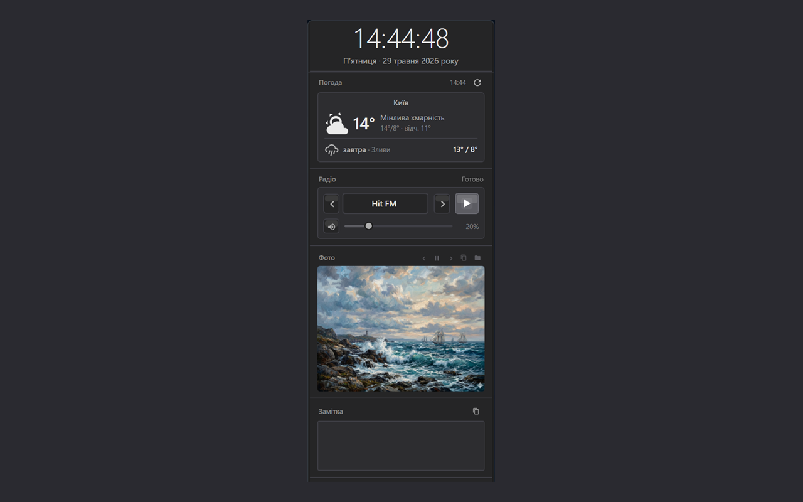
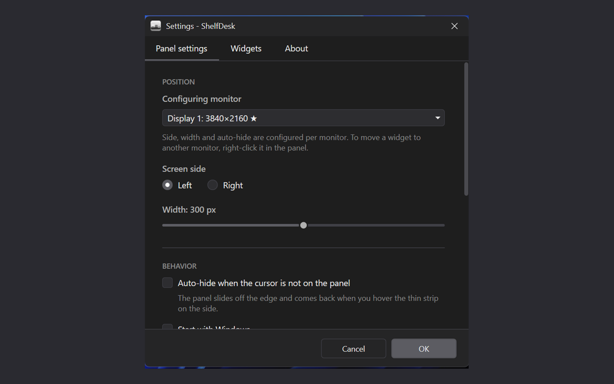
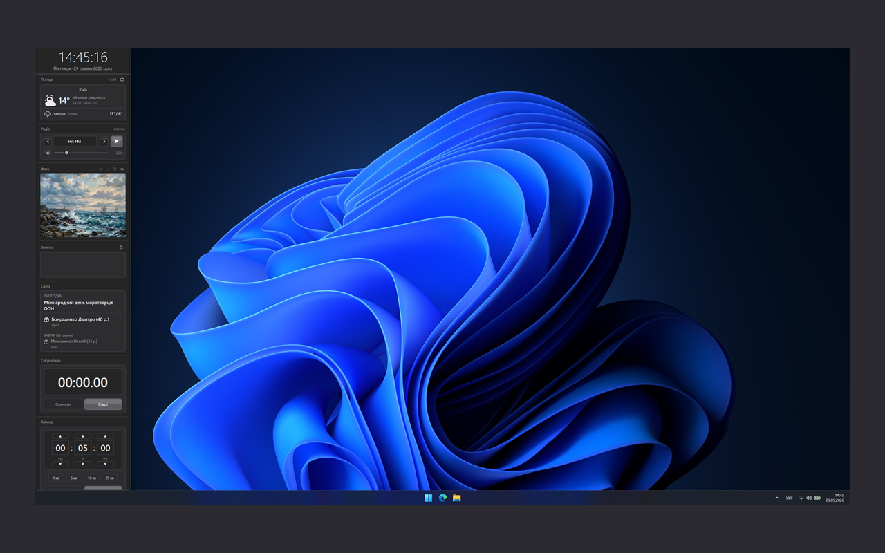

ShelfDesk
A side dock with widgets for your Windows desktop. Free, open-source, no ads.
What it is
ShelfDesk is a side dock that lives on the right or left edge of your Windows screen and hosts a set of small, useful widgets.
The dock reserves its screen space through the Windows AppBar API. That means: when you maximize any window, it sits next to ShelfDesk rather than underneath it. No browser, IDE, or Word will ever cover your notes, clock, or todo list.
Dark and light themes switch live. Ukrainian and English UI. Works across all Windows virtual desktops. Auto-saves state. Everything is configurable through a clean settings interface.
9 built-in widgets
Any of them can be added, removed, renamed, pinned to the top, or reordered via drag and drop. Each one persists its state between launches.
What it looks like
Screenshots of the live app. Click to enlarge.



Download
Ready-to-run .exe in a zip archive (~70 MB, self-contained — no separate .NET install needed).
After download: extract anywhere, run Shelf.exe.
Windows SmartScreen may warn you - this is normal for new open-source apps without a commercial code-signing certificate. Click «More info» → «Run anyway».
Alternatively - build from source yourself, especially if you want to add your own widget.
Frequently asked questions
How much does ShelfDesk cost?
Nothing. The app is free and open-source under the MIT license. No subscriptions, ads, in-app purchases, or telemetry.
Will there be a version for Windows 7 or 8?
No. ShelfDesk is built on .NET 8 and uses modern WPF/Win32 APIs available from Windows 10 version 1809 and later. Support for older systems is not planned.
Will it be in the Microsoft Store?
Planned. Right now we're focused on a stable release through GitHub. Publishing to the Store requires additional work (MSIX packaging, dev account, certification) - it will arrive in a future release.
Why does Windows warn me on first launch?
That's SmartScreen - Windows protection from unknown apps. It triggers for any application without a commercial Authenticode signature, which costs $200-400/year. For a free open-source project this is too expensive right now; we plan to add signing when we can. Until then - just click «More info» → «Run anyway». The full source code is open and available for audit on GitHub.
How do I disable autostart with Windows?
In ShelfDesk: right-click the panel → Settings → «Panel settings» tab → uncheck «Start with Windows».
How do I uninstall ShelfDesk?
Close the app (right-click → Exit), delete the folder where you extracted the zip. To also remove saved settings - delete the %APPDATA%\Shelf\ folder.
What data does ShelfDesk send to the internet?
Only what widgets need: requests to radio station servers (if you play radio), requests to api.open-meteo.com (if the weather widget is active). No telemetry, analytics, or personal data. Settings are stored locally only.
Can I add my own widget?
Yes! The architecture is built for this. Each widget is a separate C# project that compiles to a DLL alongside the main app. See CONTRIBUTING.md for a step-by-step guide.
About the author and contacts
ShelfDesk is developed by Bridges Community.